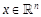
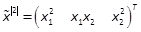
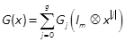
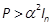
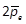
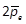
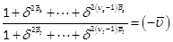
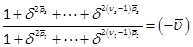

International Journal of Electrical and Computer Systems (IJECS)
ISSN: 1929-2716

Volume 1, Issue 1, Year 2012 - Pages 26-34
DOI: 10.11159/ijecs.2012.004
Nonlinear Sub-Optimal Control for Polynomial Systems - Design and Stability
Karim Khayati, Riadh Benabdelkader
Royal Military College of Canada, Department of Mechanical and Aerospace Engineering, PO Box 17000, Station Forces, Kingston, Ontario, Canada K7K 7B4
karim.khayati@rmc.ca; riadh.abdelkader@rmc.ca
Abstract - Many real world systems are inherently nonlinear. Therefore, the linear quadratic regulator theory is rarely efficient for these systems. In this paper, we propose the design of an optimal feedback control for polynomial systems in the indeterminate state variables. To deal with the case of a nonlinear infinite-horizon-cost-functional, we investigate the control based on the Lyapunov functions (LF) and by using the Kronecker product (KP) algebra. Then, we analyze the stability of the feedback and its domain of attraction (DA) in form of convex problems based on the linear matrix inequality (LMI) formalism. The practical sub-optimal control is evaluated through simulation results and comparative schemes.
Keywords: Polynomial Systems, Matrix KP, Nonlinear State-Feedback, Stability, Sub-Optimal Control
© Copyright 2015 Authors - This is an Open Access article published under the Creative Commons Attribution License terms. Unrestricted use, distribution, and reproduction in any medium are permitted, provided the original work is properly cited.
1. Introduction
Numerous physical systems are very well known to be nonlinear by nature, but methods for analysing and synthesizing controllers for nonlinear systems are still not as well developed as their counterparts for linear models (Ekman, 2005). The investigation of new techniques for nonlinear problems such as the stability, the estimation and the control design remains a challenge until today (see e.g. (Zhu & Khayati, 2012; Zhu & Khayati, 2011; Won & Biswas, 2007; Khayati et al., 2006, Ekman, 2005)). In particular, to deal with the nonlinear optimal control problem, it has been stated in (Khayati, 2013) and references cited therein that a great variety of works shown in the literature used simple techniques, based on the local linearization, and more complex ones, such as (but not limited to) the state-dependent-Riccati (SDR) equation, the nonlinear-matrix-inequality- and frozen-Riccati-equation-based methods (Won & Biswas, 2007; Huang & Lu, 1996; Banks & Mhana, 1992). These methods could work well in some applications but rigorous theoretical proofs were lacking (Won & Biswas, 2007). The related grey area nevertheless covers the stability analysis of these closed loop controllers and also their implementation (complexity of the algorithms) within a large set of plants. These concerns have been discussed in separate works with a lot of compromises to achieve their goals (Won & Biswas, 2007; Ekman, 2005; Banks & Mhana, 1992).
Recently, the KP algebra has shown an important role in research activities dealing with control analysis and design (Mtar et al., 2009; Bouzaouche & Braik, 2006; Rotella & Tanguy, 1988). In these works, polynomial modelling structures represent the nonlinearities using the matrix KP and the vector power algebra (Steeb, 1997; Brewer, 1978). This modelling resembles the classical linearization, but with a difference. In fact, the order of truncation of the decomposition is high enough to represent closely and fairly the actual dynamics of the system.
In this paper, the optimal control for affine input nonlinear systems (i.e. linear w.r.t. the input but nonlinear in terms of the states (Rotella & Tanguy, 1988)) is considered. Such a large class contains well-known examples in control theory and many physical systems (e.g. mass-spring systems with softening/hardening springs, artificial pneumatic muscles, flight engine setups, etc.) (Chesi, 2009; Ekman, 2005; Banks & Mhana, 1992). The controller is developed using the well-known optimality conditions (Goh 1993; Borne et al., 1990; Rotella & Tanguy, 1988) by converting the nonlinear SDR equation into a set of algebraic equations using the KP algebra (Steeb, 1997; Rotella & Tanguy, 1988). The proposed method is using the same technique developed in (Rotella & Tanguy, 1988), but with a main difference of considering a given quadratic form for the cost index functional allowing the analysis of the stability of the optimal state-feedback (Goh, 1993). In fact, this analysis will show cases where the overall system will be globally asymptotically stable (GAS), or will estimate alternatively its DA and how much this domain can be large when the system is locally asymptotically stable (LAS) eventually. The stability and DA estimate features will be cast as convex problems that will be solved using LMI frameworks (Chesi, 2009; Chesi, 2005). Indeed, we will propose a technique that ensures the computation of the largest estimation of the domain of attraction (LEDA) using both the well-known complete square matrix representation (SMR) (Chesi, 2009; Chesi, 2003) and a new formalism of a complete rectangular matrix representation (RMR).
We will proceed as follows. In Section 2, we introduce a set of useful notations, definitions and properties regarding the matrix KP algebra, the vector power series and the SMR/RMR formulations. Section 3 is devoted to the problem statement of the nonlinear dynamics, the nonlinear quadratic cost functional to be optimized and the related optimality conditions. In Section 4, we introduce an LF-based optimal cost index that will be used in the transformation of the polynomial SDR equation. Then, Section 5 deals with the computation of a closely acceptable solution to this nonlinear equation in the unknown constant matrices, while in Section 6, an analytic and practical form of the state-feedback sub-optimal control is developed. Section 7 introduces the stability issue of the designed sub-optimal closed-loop. Moreover, in Section 8, we discuss the computation of the LEDA of this closed loop system. Finally, to illustrate the proposed technique, numerical and comparative results are presented in Section 9, while Section 10 concludes this work.
2. Useful Notations, Definitions and Proprieties
Notations and properties of matrices, vectors, dot product and KP tensors used in this paper are exhaustively discussed in the literature; e.g. (Schott, 2001; Steeb, 1997; Brewer, 1978). The proofs of the new lemmas introduced in this Section are based on theorems introduced in these references. Due to lack of space, all these theorems as well as the proofs of the lemmas shown below are omitted.
2. 1. Definitions
Definition 1: For any vector and any integer j, is the j-power of a vector xand is the non-redundant j-power of the vector xwith standing for the binomial coefficient. We have , s.t. (Mtar et al., 2009; Brewer, 1978).
Definition 2: Let w(x)be any homogenous form of degree 2j, then the SMR of w(x)in any is given by (Chesi, 2005; Chesi, 2003). is considered a base vector of the homogenous function of degree jin x. Wis a suitable but non-unique symmetric matrix SMR, also known as Gram matrix. All matrices Wcan be linearly parameterized as , where is a free vector with . is a linear parameterization of the set . We refer to W(β)as the complete SMR of w(x).
Definition 3: Let w(x)any form of degree 2j+1in given by , where . Using theorem T2.13 of (Brewer,
1978), w(x)can be
written using a new formulation given by RMR as , with and  . Then, similarly to the homogenous forms of
even order shown above, we propose a complete RMR of w(x)as , where βis a vector of free parameters. is a linear
parameterization of the set . We refer to as the complete RMR of w(x). The following two examples
illustrate this new formulation.
. Then, similarly to the homogenous forms of
even order shown above, we propose a complete RMR of w(x)as , where βis a vector of free parameters. is a linear
parameterization of the set . We refer to as the complete RMR of w(x). The following two examples
illustrate this new formulation.
Example 1:Consider the form of degree 3in two variables . Noting and , we obtain, for , M+L(β)=.
Example 2: Consider the form of degree 3in three variables . Noting and , we obtain, for , M+L(β)=.
2. 2. Notations
Notation 1: If Vis a vector of dimension , then is the -matrix verifying . Therefore it is called the matnotation.
Notation 2: M+stands for the Moore-Penrose pseudo-inverse of any full rank matrix M.
Notation 3: Given ,for any
integer , we
denote by and . We have where  is the direct sum ofT1, T2, , Tp, denoted by , with and (Halmos, 1974).
is the direct sum ofT1, T2, , Tp, denoted by , with and (Halmos, 1974).
Notation 4: For any vector and integers pand μ, we denote by .
2. 3. Lemmata
Lemma 1: and (Khayati & Benabdelkader, 2012a),
where is given by and therefore called the j-differential Kronecker matrix. In(resp. ) denotes the identity matrix of (resp. ), the permutation matrix of (Rotella & Tanguy, 1988; Brewer, 1978). Equivalently, can be derived from
Lemma 2: For xand ycolumn-vectors of and respectively and for any matrix , we have (Khayati & Benabdelkader, 2012a)
Lemma 3: Consider a matrix . Let be a partition of A, i.e. , . We have (Khayati & Benabdelkader, 2012a)
3. Problem Statement
Consider the nonlinear system given by
where designates the time, the state vector, the input vector. and for are analytic vector fields from into expressed as polynomials in x. Note that . By using the KP tensor, we write , and then, , with , and . Let be a vector field in the state vector xgiven by with (Khayati & Benabdelkader, 2012a; Rotella & Tanguy, 1988).
For Qa symmetric non-negative definite matrix of and Ra symmetric positive definite (SPD) matrix of , we propose the design of a state feedback which minimizes the continuous-time cost functional
We denote by V(x)the optimal cost with an initial condition xat t(Goh, 1993; Borne et al., 1990)
where is the optimal control. The optimality conditions, corresponding to the problem (5) and (6), are given by (Borne et al., 1990)
where denotes the derivative
of V(x)w.r.t.
the state vector x;
i.e.  .
.
4. Quadratic Cost Function Representation
Based on the optimality conditions discussed in (Borne et al., 1990; Rotella & Tanguy, 1988), we build the following procedure to obtain a suboptimal state feedback in a polynomial form using the KP tensor, vecand matnotations (Khayati & Benabdelkader, 2012a). Such a design is based on the determination of the cost function V(x)in a quadratic form. In fact, this function would be expected to satisfy the conditions of any Lyapunov candidate function (Goh, 1993). We propose (Khayati & Benabdelkader, 2012a)
with , Pis an SPD constant matrix of and Pjconstant matrices of . Note that V(x)can be expressed in a compact form
where
And equivalently, by using the Cholesky decomposition, P1exists s.t. , then the cost function V(x)can be rewritten in a summation form as
with
The expression of V(x)given by (13) and (14) will be advantageous to solve the nonlinear SDR (9). Using theorems T2.3 and T4.3 in (Brewer, 1978) and applying lemmas 1, 2 and 3 and the matnotation, introduced in Section 2, we obtain the derivative of (13) w.r.t. x
with
where is the square j-differential Kronecker matrix of introduced in lemma 1 (see Section 2). Using the KP tensor, the theorem T2.13 of (Brewer, 1978), the lemmas 2 and 3, and the matnotation, introduced in Section 2, we obtain from the nonlinear SDR equation (9)
where
5. Determination ofPp
In this Section, the matrices Pp, for , will be computed from (17) by cancelling the coefficients of . The details of such steps, based on the KP notations and theorems introduced in (Steeb, 1997; Brewer, 1978) as well as the lemmas 1, 2 and 3 shown in Section 2, are omitted due to lack of space.
First, the matrix P1is obtained by cancelling the terms of , in (17). The operator is linear on matrices of the same dimensions. Noting that the first differential Kronecker matrix is given by and that P=P1TP1is SPD, we use (14), (16), (18) and the matnotation to obtain the classical algebraic Riccati equation (ARE)
And thence, for a given , the calculation of Pp, , is obtained from (17) by cancelling the coefficients of . Using vecand mat notations, theorems T1.5, T1.6, T3.2, T3.4 of (Brewer, 1978) and the iterative form of the differential Kronecker matrix (2), we combine (14), (16) and (18) to obtain
where and . Note that  is a Hurwitz matrix, then is regular for all . is a singular matrix for all nonzero
integers pand is regular for peven and singular for podd (Khayati & Benabdelkader,
2012a; Rotella & Tanguy, 1988). Using the non-redundant vector power
notation (Bouzaouche & Braiek, 2006), and the theorem T3.4 of (Brewer,
1978), we write where
is a Hurwitz matrix, then is regular for all . is a singular matrix for all nonzero
integers pand is regular for peven and singular for podd (Khayati & Benabdelkader,
2012a; Rotella & Tanguy, 1988). Using the non-redundant vector power
notation (Bouzaouche & Braiek, 2006), and the theorem T3.4 of (Brewer,
1978), we write where
 is the
transformation matrix defined in Section 2 (Bouzaouche & Braiek, 2006). Two cases arise depending on p:
is the
transformation matrix defined in Section 2 (Bouzaouche & Braiek, 2006). Two cases arise depending on p:
Case Ι pis even: Let be a full rank rectangular matrix. We obtain
If P, P2, , Pp-1are known, can be calculated as a solution of the linear equation (21). Thus, is deduced. In fact, by using the Moore-Penrose pseudo-inverse of , we obtain
Case ΙΙ pis odd: Eq. (17) is rewritten using the non-redundant power series. Then, the coefficients of are given in (20), but multiplied by on the left hand side. Thus, this linear equation becomes
where > is a full rank rect-angular matrix and . If P, P2, , Pp-1are known, can be calculated as a solution of the linear equation system (25). Thus, is deduced. In fact, by using the Moore Penrose pseudo-inverse of , denoted by , we obtain
6. Implementation of the State Feedback
Consider the nonlinear dynamics (5). The optimal control minimizing the functional cost (6) is obtained by the optimality conditions (8) and (9). We propose the design of a practical sub-optimal control using the matrices i>P, P2, , Pp-1computed in Section 5. It is based on an approximated optimal cost V(x)given by (10). An analytical form of the state feedback can be obtained by using (8), (15), (16) and (18) (Khayati & Benabdelkader, 2012a)
with and
The KP tensor is used here to design a systematic computation of a sub-optimal state-feedback. The proposed nonlinear feedback (25) with (26) would not necessarily be implemented with a great number of computed matrices Ppto be so different from the linear control approximation, a priori. According to (Rotella & Tanguy, 1988), it can be concluded that the state-feedback obtained with only P(i.e., only the first order of the SDR equation) is more efficient than the solution issued from the linearized system. In fact, by computing only P, we may obtain a polynomial sub-optimal control of order g + 1(where gis the order of the term G(x)in (5)), in particular, when gis non-zero. The stability of the proposed closed-loop feedback (5) and (25) will be discussed in the following section.
7. Stability of the Sub-Optimal State Feedback
To investigate the stability of the closed loop system, we consider V(x), given by (10), as a Lyapunov candidate function. V(x)is a radially unbounded continuous function, and its derivative exists and is continuous. From (10), if
holds, then the Lyapunov candidate function V(x)is positive definite; that is , . Note that (27) is equivalent to . The time derivative of the LF V(x), along the trajectories of the closed loop system (5) and (25), is given by
Let us define B
In the following, we assume
 and consider
the closed ball .
Given αs.t.
; i.e. for all nonzero , is an estimate of the DA if (Chesi, 2009; Chesi,
2003). The computation of the maximum s.t. , i.e. (5) and (25) is LAS, corresponds
to the LEDA of the closed-loop dynamics and is given by where (Chesi, 2009)
and consider
the closed ball .
Given αs.t.
; i.e. for all nonzero , is an estimate of the DA if (Chesi, 2009; Chesi,
2003). The computation of the maximum s.t. , i.e. (5) and (25) is LAS, corresponds
to the LEDA of the closed-loop dynamics and is given by where (Chesi, 2009)
8. LEDA Computation of the Closed Loop System
In this section, we present the mechanism to evaluate the LEDA of the obtained sub-optimal closed-loop system. Let be a given sphere. The problem (29) turns out that (Chesi, 2003)
We assume that P, P2, , are obtained from (19), (21) and (23). The terms and are polynomials in x of degrees and , respectively. For any , we have
with  , where Vij is given by (16). Using the non-redundant
vector power series and the vector notations introduced in Section 2,
without loss of generality, we assume that , with ,
and s.t. .
The terms and are
polynomials in even and odd vector powers in xof orders and , respectively. and are integers s.t. and . Then, we use the SMR and RMR notations
introduced in Section 2 to set the time derivative of the LF, , in a quadratic form. If
we denote by and
for fodd, and and for feven, respectively. We obtain
, where Vij is given by (16). Using the non-redundant
vector power series and the vector notations introduced in Section 2,
without loss of generality, we assume that , with ,
and s.t. .
The terms and are
polynomials in even and odd vector powers in xof orders and , respectively. and are integers s.t. and . Then, we use the SMR and RMR notations
introduced in Section 2 to set the time derivative of the LF, , in a quadratic form. If
we denote by and
for fodd, and and for feven, respectively. We obtain
where  (see Section 2). (32) can be
rewritten as follows
(see Section 2). (32) can be
rewritten as follows
where and
The decision variables βare set by the concatenation of all free variables and , . Two cases arise depending on the size of the values of and in (33).
8. 1. Case of
Using the transformation introduced in Section 2, we have if the LMI
holds in the free decision variable β. Thus, for Psolution of the ARE (19), given αs.t. and computed from (21) and (23), if the LMI (35) problem is feasible in β, then the sub-optimal state-feedback (5) and (25) is GAS.
8. 2. Case of
Let vbe the least common multiple of and , i.e. s.t. . Consider the well-posed vectors and introduced in Section 2. Noting , , then we have , and  . Thus, (33) is equivalent to
. Thus, (33) is equivalent to
with . is the pseudo-inverse of introduced in Section 2, , . Noting that Ttis SPD, let be the Cholesky decomposition. Then, from (36), , is equivalent to
where the factor depends on . If , then and monotically increasing with . If , then and monotically decreasing with . The following results hold.
Sub-case : , s.t. the LMI (37) holds. Thus, for Psolution of the ARE (19), given αs.t. and P2, , computed from (21) and (23), the sub-optimal state-feedback system (5) and (25) is GAS.
Sub-case : Given  , consider the LMI
, consider the LMI
in the vector βand the scalar . If s.t. the LMI (38) holds,
then the LMI constraint (37) holds , then we select and we have decreasing with (i.e.  as ). Thus, for Psolution of the ARE (19), given αs.t. and P2, , computed from (21) and (23), if the LMI (38)
is feasible in and β, then the sub-optimal
state-feedback system (5) and (9) is GAS.
as ). Thus, for Psolution of the ARE (19), given αs.t. and P2, , computed from (21) and (23), if the LMI (38)
is feasible in and β, then the sub-optimal
state-feedback system (5) and (9) is GAS.
Sub-case and s.t.  : Alower bound γ, given by (30), is computed by , where is a solution of the following
eigen-value problem (EVP): subject to and LMI (38). If of this EVP is negative, then the
linear inequality constraint corresponds to as .
: Alower bound γ, given by (30), is computed by , where is a solution of the following
eigen-value problem (EVP): subject to and LMI (38). If of this EVP is negative, then the
linear inequality constraint corresponds to as .
Remark: The results discussed above can be proven using simply the theorem 1 of (Chesi, 2003) and the proposition 2 of (Chesi, 2005).
9. Example
As an example, we consider the design of a nonlinear aircraft flight control problem which has been exhaustively treated in literature (see e.g. (Banks & Mhana, 1992)) and defined by
where x1is the angle of attack
in rad, x2the pitch angle in rad, x3the pitch rate in rad/secand uthe control input provided by the
tail deflection angle in rad(Banks & Mhana, 1992). Note that terms
involving nonlinearities in uwith small effect on the dynamics are
eliminated, as the approaches discussed here cannot account for nonlinear
control terms, but are taken into consideration in the simulations. The
performance index uses ,Q= and R=1. The simulations have been
applied for the proposed LF-based technique as well as the linear control
Lin where the dynamics is linearized about the origin, the KP-based design
introduced in (Rotella & Tanguy, 1988) and the SDR-equation-pointwise-based
(referred to as PW) technique (Banks & Mhana, 1992). The sub-optimal cost
Jis evaluated
with different initial conditions in terms of angle of attack, x1(0), and same for the different
methods. Table 1 shows the cost performance errors in %. The LF- (of orders 2 and 3), KP- (of orders 2 and 3) and Lin-based design costs are compared
to the PW-technique one. A positive value corresponds to an improvement (i.e.,
a lower cost) with the given method compared to the PW cost, meanwhile a
negative value corresponds to a higher cost. Figures 1-3 show the control
variable, the angle of attack and the pitch angle, respectively, obtained with
the initial condition .
Due to lack of space the pitch rate figure is omitted. Curves of LF-based
design, with orders of truncation 2 and 3, overlap almost during all the time showing
very similar results in terms of transient behaviour and stability.
Furthermore, the proposed design (with both orders 2 and 3which are relatively small) exhibits a
significant added-value in terms of cost estimation and domain of attraction
interval performances compared to the other methods.
and R=1. The simulations have been
applied for the proposed LF-based technique as well as the linear control
Lin where the dynamics is linearized about the origin, the KP-based design
introduced in (Rotella & Tanguy, 1988) and the SDR-equation-pointwise-based
(referred to as PW) technique (Banks & Mhana, 1992). The sub-optimal cost
Jis evaluated
with different initial conditions in terms of angle of attack, x1(0), and same for the different
methods. Table 1 shows the cost performance errors in %. The LF- (of orders 2 and 3), KP- (of orders 2 and 3) and Lin-based design costs are compared
to the PW-technique one. A positive value corresponds to an improvement (i.e.,
a lower cost) with the given method compared to the PW cost, meanwhile a
negative value corresponds to a higher cost. Figures 1-3 show the control
variable, the angle of attack and the pitch angle, respectively, obtained with
the initial condition .
Due to lack of space the pitch rate figure is omitted. Curves of LF-based
design, with orders of truncation 2 and 3, overlap almost during all the time showing
very similar results in terms of transient behaviour and stability.
Furthermore, the proposed design (with both orders 2 and 3which are relatively small) exhibits a
significant added-value in terms of cost estimation and domain of attraction
interval performances compared to the other methods.
Table 1. Cost index and cost errors (expressed in % of )
,
,
,
,
 .
.
|
||||||
| 0.0016 | 20.2 | 18.6 | -0.6 | -0.8 | 0.0 | |
| 0.0071 | 23.8 | 22.8 | -1.6 | -2.6 | -0.2 | |
| 0.0196 | 30.9 | 30.3 | -3.7 | -6.8 | -0.7 | |
| 0.0519 | 46.3 | 45.7 | -13.3 | -31.7 | -4.3 | |
| 0.1056 | 48.3 | 46.3 | Unstab. | Unstab. | Unstab. | |
| 0.4081 | 71.4 | 65.6 | Unstab. | Unstab. | Unstab. | |
| 1.6170 | 58.5 | 50.9 | Unstab. | Unstab. | Unstab. |
10. Conclusions
A new nonlinear optimal control design for polynomial systems subject to nonlinear cost objectives is proposed. We develop a systematic and practical LF-based sub-optimal control approach using the KP notations. The analysis of the stability of the closed loop system is then discussed using LMI frameworks. The problem of the LEDA computation is cast as a convex EVP design. This method is expected to ensure a best compromise between the feasibility of the implemented scheme and the stability analysis of the overall system. An example showing simulations and comparative results successfully demonstrates the effectiveness of this technique. Furthermore, a modified version of this nonlinear optimal control will be presented to relax the conditions within the computation of the Lyapunov function matrices of high order, and also, improving the formulation of the stability feature (Khayati, 2013). Nevertheless, all those changes will be proposed by following the same overall procedure discussed in this paper.
References
Banks, S. P., Mhana, K. J. (1992). Optimal Control and Stabilization for Nonlinear Systems, IMA Journal of Mathematical Control and Information, vol. 9, 1992, pp. 179-196. View Article
Borne, P., Tanguy, G. D., Richard, J. P., Zambettakis, I. (1990). Commande et Optimisation des Processus, Collection Mthodes et Pratiques de l'ingnieur, ditions Technip, Paris.
Bouzaouche, H., Braiek, N. B. (2006). On Guaranteed Global Exponential Stability of Polynomial Singularity Perturbed Control Systems, International Journal of Computer, Communications and Control, vol. 1, no. 4, pp. 21-34. View Article
Brewer, J. (1978). Kronecker Products and Matrix Calculus in System Theory, IEEE Trans. on Circuits and Systems, vol. 25, no. 9, pp. 771-781. View Article
Chesi, G. (2009). Estimating the Domain of Attraction for Non-polynomial Systems via LMI Optimizations, Automatica, International Federation of Automatic Control, vol. 45, no. 6, pp. 1536-1541. View Article
Chesi, G. (2005). LMI Based Computation of the Optimal Quadratic Lyapunov Functions for Odd Polynomials Systems, International Journal of Robust and Nonlinear Control, vol. 15, pp. 35-49. View Article
Chesi, G. (2003). Estimating the Domain of Attraction: A Light LMI Technique for a Class of Polynomial Systems, IEEE Conference on Decision and Control, Hawaii, pp. 5609-5614. View Article
Ekman, M. (2005). Suboptimal Control for the Bilinear Quadratic Regulator Problem: Application to the Activated Sludge Process. IEEE Transactions on Control Systems Technology, vol. 13, no. 1, pp. 162-168. View Article
Goh, C. J. (1993). On the Nonlinear Optimal Regulator Problem, Automatica, International Federation of Automatic Control, vol. 29, no. 3, pp. 751-756. View Article
Halmos, P. R. (1974). Finite Dimensional Vector Spaces. Springer-Verlag, NY.
Huang, Y., Lu, W. M. (1996). Nonlinear Optimal Control: Alternatives to Hamilton-Jacobi Equation, IEEE Conference on Decision and Control, Kobe, Japan, pp. 3942-3947. View Article
Khayati, K. (2013). Optimal Control Design for Nonlinear Systems, IEEE International Conference on Control, Decision and Information Technologies, Hammamet, Tunisia, paper ID. 253 (accepted).
Khayati, K., Benabdelkader, R. (2012a). Nonlinear Sub-Optimal Control for Polynomial Systems New Design, International Conference on Electrical and Computer Systems, Ottawa, Canada, paper ID. 205.
Khayati, K., Benabdelkader, R. (2012b). Nonlinear Sub-Optimal Control for Polynomial Systems Stability Analysis, International Conference on Electrical and Computer Systems, Ottawa, Canada, paper ID. 208.
Khayati, K., Bigras, P., Dessaint, L.-A. (2006). A Multi-Stage Position/Force Control for Constrained Robotic Systems with Friction: Joint-Space Decomposition, Linearization and Multi-objective Observer/Controller Synthesis using LMI Formalism. IEEE Transactions on Industrial Electronics, vol. 53, no. 5, pp. 1698-1712. View Article
Mtar, R., Belhouane, M. M, Ayadi, H. B., Braiek, N. B. (2009). An LMI Criteriation for the Global Systems Stability Analysis of Nonlinear Polynomial Systems. Nonlinear Dynamics and Systems Theory, vol. 9, no. 2, pp. 171-183.
Rotella, F., Tanguy, G. D. (1988). Nonlinear Systems: Identification and Optimal Control, International Journal of Control, vol. 48, no. 2, pp. 525-544. View Article
Schott, J. R. (2001). Kronecker Product Permutation Matrices and their Application to Moment Matrices of the Normal Distribution, Journal of Multivariate analysis, vol. 87, pp. 177-190. View Article
Steeb, W. H. (1997). Matrix Calculus and Kronecker Product with Applications and C++ Programs, World Scientific, Singapore.
Won, C. H., Biswas, S. (2007). Optimal Control Using an Algebraic Method for Control Nonlinear Systems, International Journal of Control, vol. 80, no. 9, pp. 1491-1502. View Article
Zhu, J., Khayati, K. (2012). On Robust Nonlinear Adaptive Observer - LMI Design, International Conference on Mechanical Engineering and Mechatronics, Ottawa, Canada, paper ID. 206.
Zhu, J., Khayati, K. (2011). Adaptive Observer for a Class of Second Order Nonlinear Systems. International Conference on Communications, Computing and Control Applications, Hammamet, Tunisia. View Article